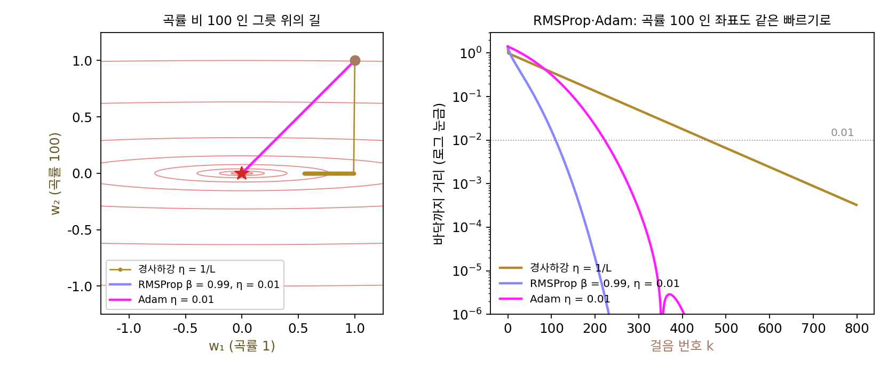

Adam: 두 이동 평균을 합치고 처음 스텝을 바로잡는다
RMSProp 은 좌표마다 스텝의 크기를 맞춰 주지만, 스텝의 방향은 지금 받은 그래디언트 하나가 정하므로 미니배치마다 그래디언트가 흔들리면 방향도 따라 흔들린다. 방향의 흔들림을 줄이는 방법은 이미 있다. 모멘텀은 지난 그래디언트들의 이동 평균 m을 들고 다니며 그 평균 쪽으로 걸었다. 그렇다면 크기는 RMSProp 처럼 그래디언트 제곱의 이동 평균으로 맞추고, 방향은 모멘텀처럼 그래디언트의 이동 평균으로 정하면 둘의 좋은 점을 함께 얻지 않을까? 두 평균을 한 식에 넣으면 무엇이 새로 어긋날까?
역사: 처음 스텝은 왜 커질까
2014년 12월 22일, 암스테르담 대학의 디데릭 킹마(Diederik Kingma)와 토론토 대학의 지미 바(Jimmy Ba)가 「Adam: 확률적 최적화 방법」을 아카이브에 올렸다. 이듬해 샌디에이고에서 열린 표현 학습 국제 학회(ICLR 2015)에서 발표했고, 2017년 1월에 올린 아홉째 판이 지금 읽는 판이다. 그들은 서론에 목표를 분명히 적었다. 드문 그래디언트에 강한 AdaGrad 와, 지형이 움직이는 온라인 학습(데이터가 들어오는 대로 한 스텝씩 배우는 학습)에 강한 RMSProp 의 장점을 합치는 것이다. 이름은 「적응적 모멘트 추정(adaptive moment estimation)」에서 왔다. 그래디언트의 평균이 1차 모멘트, 그래디언트 제곱의 평균이 2차 모멘트다.
논문이 새로 짚은 것은 두 평균이 모두 0에서 시작한다는 점이었다. 그래디언트가 늘 g로 같다고 해도, 첫 스텝의 1차 모멘트는 0.9 × 0 + 0.1g = 0.1g, 2차 모멘트는 0.999 × 0 + 0.001g² = 0.001g²이다. 둘을 그대로 나누면 0.1g/(0.0316|g|) = 3.16이 되어, 첫 스텝이 학습률의 세 배를 넘는다. 2차 모멘트의 기억 길이가 1차 모멘트보다 백 배 길어서, 2차 모멘트 쪽이 0에서 훨씬 느리게 올라오기 때문이다. 킹마와 바는 k스텝째의 두 평균을 각각 1 − β₁ᵏ, 1 − β₂ᵏ로 나누면 0에서 시작한 탓에 생긴 편향이 정확히 지워진다는 것을 보였다. 논문이 권한 기본값은 학습률 0.001, β₁ = 0.9, β₂ = 0.999, 분모에 더하는 작은 수 10⁻⁸이고, 파이토치의 기본값도 지금 이 네 값과 같다.
곡률이 100배 다른 그릇에서 세 옵티마이저
AdaGrad 를 처음 시험했던 그릇 ½(w₁² + 100w₂²)에 (1, 1)에서 출발해 세 방법을 견주자. 경사하강은 학습률 1/100, RMSProp(β = 0.99)과 Adam 은 학습률 0.01이다. 바닥까지 거리 0.01 안에 처음 드는 스텝을 센다.
| 방법 | 10스텝 뒤 | 거리 0.01 안까지 |
|---|---|---|
| 경사하강 (η = 1/100) | (0.904, 0.000) | 459스텝 |
| RMSProp (β = 0.99, η = 0.01) | (0.550, 0.550) | 110스텝 |
| Adam (η = 0.01) | (0.900, 0.900) | 223스텝 |
Adam 은 첫 열 스텝 동안 두 좌표를 똑같이 0.01씩 옮겨, 곡률이 100인 좌표도 1인 좌표도 스텝마다 학습률 크기만큼 걸었다. 곡률 비를 1, 10, 100, 1000으로 바꿔 가면 경사하강은 1스텝, 44스텝, 459스텝, 3000스텝 안에 못 닿음으로 늘어나는데, Adam 은 네 경우 모두 223스텝이다. 곡률 비가 스텝 수에서 빠졌다.
RMSProp 이 Adam 보다 빨리 닿은 것은 이 RMSProp 이 편향을 바로잡지 않았기 때문이다. v가 0에서 시작하니 첫 스텝에서 √v = √0.01 |g| = 0.1|g|이고, 스텝이 학습률의 열 배인 0.1이 된다. 이 그릇에서는 그 큰 첫 스텝이 우연히 이득이었다. 출발점이 바닥에 가까웠거나 그릇이 더 좁았다면 같은 큰 스텝이 바닥을 지나쳤을 것이다.

이렇게 그래디언트의 이동 평균과 그래디언트 제곱의 이동 평균을 함께 두고, 둘 다 0에서 시작한 편향을 바로잡은 뒤, 그래디언트의 이동 평균을 그래디언트 제곱의 이동 평균의 제곱근으로 나눠 걷는 방법을 Adam (두 이동 평균으로 걷는 옵티마이저 / adaptive moment estimation)이라 한다. 편향을 바로잡는 나눗셈을 「편향 보정(bias correction)」이라 부른다. 여기서 편향은 0에서 시작한 탓에 이동 평균이 참값보다 작게 나오는 통계의 bias 이고, 신경망 층이 뉴런마다 더하는 상수 b(바이어스)와는 다른 말이다.
그래디언트가 한동안 같은 쪽을 가리키면 m̂과 √v̂이 둘 다 |g|에 가까워져, 한 스텝은 학습률 η 남짓이다. 그래디언트의 부호가 스텝마다 바뀌면 m̂은 0 쪽으로 줄고 √v̂은 그대로라 스텝이 작아진다. Adam 의 한 스텝은 「그래디언트가 얼마나 한결같은가」에 따라 0과 η 사이에서 정해지고, 그래디언트의 크기 자체는 거의 들어가지 않는다. 킹마와 바도 논문에서 스텝의 크기가 대략 학습률로 묶인다고 적었다.
ML에서: 옵티마이저의 기본값
Adam 이 나온 뒤로 신경망 논문에서 옵티마이저를 따로 설명하지 않으면 대개 Adam 이나 그 변형을 썼다는 뜻이 되었다. Adam 이 이렇게 쓰기 쉬운 것은 위의 두 성질 덕분인데, 먼저 학습률이 「한 스텝에 파라미터를 얼마나 옮길까」라는 눈에 보이는 양이라 층마다 그래디언트 크기가 백 배씩 달라도 학습률 하나로 버틴다. 또 손실에 상수를 곱하거나 단위를 바꿔도 스텝 크기가 거의 바뀌지 않는다. 파이토치의 torch.optim.Adam 은 학습률 0.001, betas=(0.9, 0.999), eps=1e-8 을 기본값으로 쓰고, 큰 언어 모델은 그래디언트 제곱을 얼마나 오래 기억할지 바꾸려고 이 가운데 β₂를 고쳐 쓴다.
문제 7. 연비 앱
차계부 앱이 연비를 「주행 거리의 이동 평균 ÷ 넣은 연료의 이동 평균」으로 보여 준다. 주행 거리 쪽은 「0.9 × 옛 평균 + 0.1 × 오늘 값」, 연료 쪽은 「0.999 × 옛 평균 + 0.001 × 오늘 값」으로 업데이트하고, 둘 다 0에서 시작한다. 날마다 40km를 달리고 4L를 넣으니 참 연비는 10km/L다. (가) 1일째, 10일째, 100일째, 1000일째에 앱이 보여 주는 연비는? (나) 11km/L 아래로 처음 내려오는 날은? (다) 이 앱을 어떻게 고치면 첫날부터 10을 보여 주는가?

이동 평균이니까 처음 며칠은 좀 낮게 나오다가 금방 10이 되겠죠. 평균이 0에서 시작하니까요.

낮게가 아니야. 첫날 거리 평균은 4, 연료 평균은 0.004라서 1000km/L가 나와. 10일째 654.3, 100일째 105.0, 1000일째 15.8이야.

둘 다 0에서 시작했는데 왜 한쪽으로 크게 틀어졌을까요?

거리 평균은 열흘쯤이면 거의 40이 되는데 연료 평균은 1000일이 지나도 2.53이에요. 연료 쪽이 훨씬 느리게 차오르니까 나누면 커져요. 11 아래로 내려오는 건 2397일째예요. 6년 반이요.
0에서 시작했으니까 첫날 거리 평균이 40의 0.1배인 4였으니까… k일째 거리 평균은 40(1 − 0.9ᵏ)이네. 연료 평균은 같은 꼴로 4(1 − 0.999ᵏ)이고.
그 괄호가 문제라면 (다)는 어떻게 고치죠?

각각 그 괄호로 나누면 첫날부터 40과 4가 나와요. 그러면 연비는 늘 10이에요.

연료 쪽도 0.9였으면 처음부터 괜찮았던 거야?
응, 괄호가 같으니까 나누면 지워져서 첫날 10이야. 기억 길이가 다르니까 따로 바로잡아야 하는 거네.

Adam의 β₁ = 0.9와 β₂ = 0.999가 딱 이 경우잖아요. 분모 쪽이 늦게 차오르니까 바로잡지 않으면 첫 스텝들이 커지는 거예요. 새 학기 첫 주에 「주간 평균 공부 시간」을 학기 시작부터 나누면 엄청 적게 나오는 거랑 비슷하고요.
문제 8. 편향 보정을 빼면
그래디언트가 늘 같다고 할 때, 편향 보정을 뺀 Adam 의 한 스텝은 학습률의 (1 − β₁ᵏ)/√(1 − β₂ᵏ)배다. (가) β₁ = 0.9, β₂ = 0.999에서 이 배수가 가장 커지는 스텝과 그때의 배수는? 1.1배 아래로 내려오는 스텝은? (나) β₂를 0.99와 0.9999로 바꾸면 가장 큰 배수는? (다) 그릇 ½(w₁² + 100w₂²)를 (1, 1)에서 학습률 0.01로 내려갈 때, 보정한 Adam 과 보정을 뺀 Adam 의 20스텝 뒤 w₁은?
첫 스텝이 3.16배라는 건 아는데, 스텝마다 2차 모멘트가 차오르니까 그다음부터는 계속 줄겠죠.
분자 1 − 0.9ᵏ도 같이 차오른다는 걸 잊지 마세요. 몇 스텝째까지 계산해 볼까요?

2스텝째 4.25, 5스텝째 5.80, 10스텝째 6.53… 줄기는커녕 늘어요. 12스텝째에 6.57로 가장 크고, 1.1배 아래로 내려오는 건 1751스텝째예요.
분자는 10스텝이면 거의 다 차는데 분모는 √(1 − 0.999ᵏ)라 천천히 차니까, 처음 열 스텝 남짓은 분자가 더 빨리 커지는 거야.
그럼 β₂를 바꾸면 그 차이도 달라지겠네?
0.99면 가장 큰 배수가 2.13이고 첫 스텝은 딱 1이야. 0.9999면 첫 스텝이 10배, 가장 큰 배수는 20.72배. β₂를 1에 가깝게 할수록 보정이 꼭 필요해.

그릇에서는 그 큰 스텝들이 어떤 결과를 낳죠?

보정한 Adam은 스텝이 늘 0.01이라 20스텝 뒤 w₁ = 0.8027이에요. 보정을 뺀 쪽은 스텝이 0.0316, 0.0425, 0.0493, …으로 커져서 20스텝 뒤에 −0.0178, 벌써 바닥 0을 지나쳤어요.
이 그릇에서는 금방 돌아오겠죠. 학습을 막 시작한 신경망이라면요?
100스텝째에도 3.24배니까 학습률의 세 배가 넘는 스텝이 처음 100스텝 내내 이어져요. 초기화로 맞춰 놓은 크기가 흐트러지겠네요.
그래서 학습 초반에 학습률을 작게 시작해 키우는 워밍업을 같이 쓰는 경우가 많은 거구나. 편향 보정이 있어도 처음 몇 스텝의 v̂은 그래디언트 몇 개로만 만든 값이라 믿을 만하지 않으니까요.
문제 9. 손실을 1024배 해도
16비트 실수로 학습할 때는 작은 그래디언트가 0으로 사라지지 않게 손실에 1024 같은 큰 수를 곱해 역전파한다(손실 배율 조정). (가) 그릇 ½(w₁² + 100w₂²)에서 손실을 1024배 하면, 학습률 0.01인 경사하강과 Adam 의 첫 스텝은 각각 얼마인가? (나) 어떤 좌표의 그래디언트가 늘 10⁻⁹이면, ε = 10⁻⁸인 Adam 의 스텝은 학습률의 몇 배인가? 손실을 1024배 하면? (풀어 본 뒤 위젯 1의 「문제 9 불러오기」로 확인해 보자.)
Adam은 그래디언트를 크기로 나누니까 1024배 해도 스텝이 0.01로 같아요. 경사하강은 1024배가 되고요. 첫 스텝이 경사하강은 (10.24, 1024), Adam은 (0.01, 0.01)이에요. 경사하강은 다섯 스텝 만에 w₁이 −67,350이 됐어요.
Adam 은 정말 언제나 그대로일까요? (나)를 보세요.
그래디언트가 10⁻⁹이면 √v̂도 10⁻⁹이니까 10⁻⁹/(10⁻⁹ + 10⁻⁸) = 0.0909배요. 학습률의 10분의 1도 안 되네요. 1024배 하면 0.9903배로 거의 원래대로 돌아와요.

ε가 0으로 나누지 않게 넣은 작은 수인 줄만 알았는데, 그래디언트가 ε 근처까지 작아지면 스텝을 줄이는 문턱이 되는구나. 그래디언트가 10⁻⁸이면 딱 절반이고. 그러면 손실 배율을 바꿨을 때 Adam도 아주 작은 그래디언트를 가진 좌표에서는 스텝이 달라져.

그래요. Adam 이 「그래디언트의 크기에 무디다」는 말에는 「그래디언트 크기가 ε보다 충분히 클 때」라는 조건이 붙어 있어요. 그래디언트가 ε 근처까지 작아지는 일이 큰 모델에서 실제로 생기는데, 그 이야기는 β₂와 함께 다시 나와요.

보고서 분량을 「쪽수」로만 재면 글자 크기를 바꿔도 쪽수가 같은 줄 알았는데, 한 쪽에 한 줄만 쓰면 이야기가 달라지는 거랑 비슷하네요.